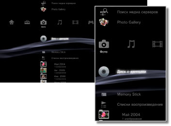

Фото > Категория "Фото"
Категория "Фото"
Следующие значки отображаются в категории  (Фото) отображаются следующие значки. Набор значков может быть различным в зависимости от условий использования.
(Фото) отображаются следующие значки. Набор значков может быть различным в зависимости от условий использования.

 |
Поиск медиа серверов | Запуск поиска мультимедийных серверов DLNA, подключенных в той же сети. |
|---|---|---|
 |
Программа Photo Gallery | Используйте эту программу для просмотра фотографий, сохраненных в системе PS3™. |
 |
Сохранить снимок экрана | Сохранение снимков экрана, сделанных в программном обеспечении формата PlayStation®3 во время игры. Эта функция доступна только она если поддерживается используемым программные обеспечением. |
 |
Медиа сервер | Подключение к мультимедийным серверам DLNA и просмотр сохраненных изображений. Отображаемый значок зависит от типа сервера. |
  |
Диск с данными | Просмотр файлов изображений, сохраненных на совместимом дисковом носителе, например, на диске CD-R или DVD-R. |
 |
Memory Stick™ | Просмотр файлов изображений, сохраненных на карте памяти Memory Stick™.* |
 |
SD Memory Card | Просмотр файлов, сохраненных на карте памяти SD Memory Card.* |
 |
CompactFlash® | Просмотр файлов изображений, сохраненных на карте памяти CompactFlash®.* |
 |
PSP™ (PlayStation®Portable) | Просмотр файлов изображений, сохраненных на карте Memory Stick™ в системе PSP™. |
 |
PSP™ (PlayStation®Portable) | Просмотр файлов изображений, сохраненных в памяти системы PSP™go. |
 |
Цифровая камера | Просмотр файлов изображений, сохраненных на цифровой камере, совместимой с системой PS3™. |
 |
WALKMAN®/ATRAC Audio Device (WALKMAN®) | Просмотр файлов с изображениями, сохраненных в WALKMAN®/ATRAC Audio Device (WALKMAN®). |
 |
ATRAC Audio Device | Просмотр файлов с изображениями, сохраненных в ATRAC Audio Device. |
 |
Устройство USB | Просмотр файлов изображений, сохраненных на устройстве-накопителе USB. |
 |
Списки воспроизведения | Предусмотрена возможность создания, изменения и воспроизведения созданных списков воспроизведения. |
 |
Изображения с цифровой видеокамеры | Просмотр файлов изображений, сохраненных в папке DCIM цифровой камеры. |
|
(папка) | Этот значок отображается для папок, которые были созданы на компьютере. |
 |
(Файлы, сохраненные на системном накопителе) | Просмотр файлов изображений, сохраненных на системном накопителе системы PS3™. Отображаются эскизы изображений. |
| * |
При использовании носителей информации с некоторыми моделями системы PS3™ требуется соответствующий адаптер USB (не входит в комплект поставки). При использовании вместе с адаптером USB носитель будет отображаться как |
|---|
 (Устройство USB).
(Устройство USB).Подсказки
- Подробнее о стандарте DLNA см. раздел
 (Настройки) >
(Настройки) >  (Настройки сети) > [Подключение к медиа серверу] в настоящем руководстве.
(Настройки сети) > [Подключение к медиа серверу] в настоящем руководстве. - В редких случаях диски и другие носители могут работать неправильно при воспроизведении в системе PS3™. В основном это происходит из-за различий в процессе производства или в кодировке программы.
- Для просмотра 3D-материалов необходимы телевизор с поддержкой 3D-стереоизображения, соответствующий стандарту 3D, и высокоскоростной кабель HDMI.